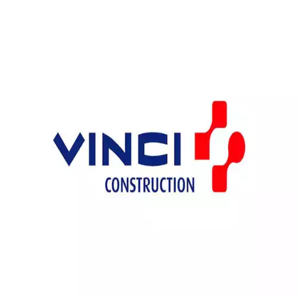
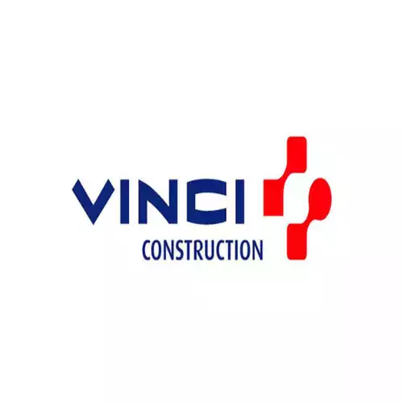

CONTACTEZ - NOUS
DES TARIFS ATTRACTIFS
Chez Aquaserv Assainissement 77, nous croyons fermement que la qualité ne devrait pas compromettre votre budget. C'est pourquoi nous vous proposons des services d'assainissement exceptionnels à des prix abordables, sans jamais faire de compromis sur la qualité.
Que ce soit pour le débouchage de canalisations, le nettoyage des systèmes d'égouts, la vidange de fosses septiques ou l'entretien des installations d'assainissement, nous sommes là pour vous offrir des solutions efficaces et durables, adaptées à vos besoins spécifiques.
Nous comprenons l'importance d'un assainissement fiable et performant pour votre propriété. C'est pourquoi notre équipe expérimentée et qualifiée met tout en œuvre pour assurer un travail impeccable à chaque intervention, tout en vous proposant des tarifs concurrentiels.
NOS PARTENAIRES


 
